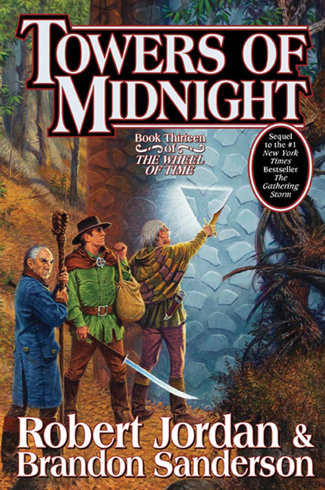

Towers of Midnight Book Review
August 18, 2023

Towers of Midnight Cover
"I didn't do half of what they say, and the other half wasn't my bloody fault"
Reviews Book Reviews Wheel of Time in ReviewAugust 18, 2023
Towers of Midnight Cover
"I didn't do half of what they say, and the other half wasn't my bloody fault"
Reviews Book Reviews Wheel of Time in ReviewI started reading this book on August 18, 2023!
I finished The Gathering Storm… what’s next? #wheeloftime
Please be careful what you click, I will be writing my Notes As I Read below, but they are hidden so that you have to click on them to see. Be careful!
"It soon became obvious, even within the stedding, that the Pattern was growing frail. The sky darkened. Our dead appeared, standing in rings outside the borders of the stedding, looking in. Most troublingly, trees fell ill, and no song would heal them.
It was in this time of sorrows that I stepped up to the Great Stump. At first, I was forbidden, but my mother, Covril, demanded I have my chance. I do not know what sparked her change of heart, as she herself had argued quite decisively for the opposing side. My hands shook. I would be the last speaker, and most seemed to have already made up their minds to open the Book of Translation. They considered me an afterthought.
And I knew that unless I spoke true, humanity would be left alone to face the Shadow. In that moment, my nervousness fled. I felt only a stillness, a calm sense of purpose. I opened my mouth, and I began to speak.
—from The Dragon Reborn, by Loial, son of Arent, son of Halan, of Stedding Shangtai-
Lan. Lan! Lan is riding Mandarb across the Proska Flats in northern Saldaea near the Blight. He hasn't seen people or Trollocs in days. Lan prepares an arrow and a man walks up leading a pack horse, he expected to see Lan on the Kremer Road, this is Bulen, Lan's retainer years ago in the Aesdaishar Palace.. nice name. Lan refuses, but decides once Bulen says his father was Malkier, Bulen needs permission to don the hadori, Lan relents and the two travel on.
Perrin. Apparenlty Perrin is dreaming a normal dream.. hmm. Hopper is there. Perrin is thinking about Berelain and Faile. Perrin is now back in Malden carrying his axe instead of hammer.. he remembers the fight differently, he refuses to kill Aram but then an image of Perrin splits off and turns into a wolf and kills Aram. Hopper slams into Perrin after Perrin makes more statues of people he knows.
He wakes up and he is in his tent with Faile, there have been bubbles of evil that made red snakes poison hundreds, the Aes Sedai couldn't completely Heal them. It then takes Perrni a long time to go back to sleep.
Graendal. Holy smokes, this is how the DO uses rats as spies... hahaha for the entirety of this book series I assumed the rats could talk.... hahahahahah. Okay, this was incredible, unexpected and interesting! We are back in time, Graendal is in Natrin's Barrow with Aran'gar, Delana, and hundreds of servants. Graendal now has access to the True Power - the TP strains and scars the Pattern. What the Creator can create, the DO can destroy.
Ramshalan comes in, Delana weaves Compusion on him. Graendal uses the True Power to take over the mind of a dove. Graendal wonders if LTT remembers her murder of Yanet. The dove sees Ramshalan, Rand, Nynaeve, and the Aiel. Rand weaves balefire and Graendal freaks out! Wraps Aran'gar and Delana in Air and opens a gateway with saidar. She jumps through and sees a flash of light and the gateway disappears. She feels the balescrem from the massive use of balefire. She is safe because Rand thinks she is dead. WHOA! Unexpected! - and yes I have to update my Forsaken count..
Galad. Okay, Galad was called a darkfriend by Asunawa. The Questioners arrested him. Asunawa fled when Galad beat Valda in KOD (I think.)
Padan Fain. Good-NESS lol. The creature formally known as.. Fain / Mordeth, yikes. The sky is black. Fain keeps cutting himself. He thinks he needs a new name. He just killed a Worm. They make a lot of noise. Then mist comes out of the ground and kills a Fade and turns the Trollocs with the fade into something crazy. Fain doesn't hunt Rand, he is going to meet him at Shayol Ghul and kill him!
Melanarin. Oh that was beautiful. Keemlin gets his sword before his nameday to become a MAN! Malenarin is commander of Heeth Tower, the northernmost tower near the Blight in Kandor. They use a cool system with mirrors and lamps to shout danger for nearby towers. Trollocs come in hordes!
Also, dang it.. undulating count: 1. actually 2. 2 in one POV.
Almen Bunt. I thought I recognized that name.. Bunt. THIS WAS THE MAN WHO HID RAND AND MAT IN THE EYE OF THE WORLD!! Wow, so cool. Also, Rand has a lightness around Rand now instead of darkness.. interesting.
Wind rises above the misty peaks of Imfaral, there are thirteen tall, black fortresses. Seanchan is in chaos. The Fields of Peace are burning and the Tower of Raves is broken. A murder rules in Seandar.. oh really??
The Wind blows to an apple orchard below Dragonmount. Almen Bunt is there. Everythign is hagard and wilting. People and names, apple are gross and rotting... Then Rand shows up, and my guess is Rand is going to see Egwene! Rand leaves in his path an abundance of healthy apples and green grass. Rand thinks who he goes to see will not be pleased, is he in for a rude awakening or what?!
Almen feels better than he has in years. He calls the farm hands to gather people from the villages, even those passing on Shyman's Road, to help pick the apples. He feels something tugging him after the young man, but he will take care of the apples first.
Perrin. I do declare, the Pattern wants Perrin to bring an incredibly massive fighting force to Rand. The gateway boys won't be able to gateway for sometime - in my estimation, and Perrin's army is going to be HUGE. That is all. Also, "there is something you need to see".
Galad. Asunawa = Dead.
Galad wakes from his beating. He has many sharp pains in addition to the still-healing wounds from Valda. He is in a tent bound to a stake. He hears voices outside the tent; the flaps open and, to his surprise, it is Trom, Bornhald and Byar. Lords Captain Kazere Tethow, Alaabar Harnesh and Brandel Vordarian are with them. After thinking through the arguments they decided Galad was in the right. They executed Asunawa and the Whitecloaks are now united behind Galad. Candeiar enters to tend his wounds. They will march to Andor.
Egwene. Oh yes, here we go! Egwene wants Nynaeve and Elayne to swear on the OR - I agree. She also needs to let them know about Elaida (collared). She then dreams of Gawyn then BOOM.
Dreams of thirteen black towers (seanchan) falling down. Then eagles and snakes. Then An enormous sphere made of the finest crystal on a dark hilltop. It sparkles in the light of twenty-three enormous stars. There are cracks in it and it is help together by ropes. Rand walks up with a woodsman axe and chops the ropes. The sphere breaks apart, falling to pieces and Rand shakes his head. Which is awesome, I'm reminded of the Bore.. hope to see more of that.
Rand is here to meet Egwene.
Siuan. Oh why yes, thank you! This is great! Rand is in the Tower. Gawyn is trying his best to rekindle the trust with Egwene. Siuan thinks Egwene is an incredible Amyrlin. Rand enters shielded by 26 Aes Sedai and guarded by 100 Warder. His eyes look ageless. Rand speaks to Siuan and Bryne and thanks Siuan for taking an arrow meant for him (TGH!). Tiana runs up and hands Rand a letter with a red seal.. interesting. Rand asks Siuan to calm Egwene once he leaves.. oh boy lol.
Egwene. Oh this is so good! Rand comes in calm as can be. And proceeds to tell Egwene nearly everything she needs to know.
Rand speaks philosophically and Egwene worries that he is mad. She says she will have sisters examine him but he refuses. He tells her the last time he failed was because he used only men. It will take both saidin and saidar to seal the Bore. He says he remembers being Lews Therin like a dream.
He says he will go to Shayol Ghul in one month and break the remaining seals. He must clear the rubble, open the Bore fully, before it can be sealed again. He will meet them at the Field of Merrilor one day before. She thinks of her dream of him letting the sphere break. He asks leave to depart and turns to go. She sees his left hand is missing. After he is gone, the Sitters slump in their seats. Silviana, Barasine and Yukiri say could not speak for his ta'veren effect. Chubain reports that Bryne is following Rand to make sure he leaves. Egwene says they need allies to stop him from breaking the seals.
Perrin. Hmm, Perrin riding Stayer is at the Jehannah Road with Faile, Wil, Seonid and the six Wise Ones, Nevarin. Berelain, Annoura Gallenne are also there. Alliandre stayed behind. A patch of the Blight has transplanted there. Mori examined the entire patch. They ride into the patch and find a strange village in the middle. Sulin reports that no one is there. Masuri says that the wood and thatch are something she has never seen. Perrin orders the Wise Ones to burn the whole area.
Oh wow, Perrin. I think I'm interested in your storyline now! Perrin wakes in the Wolf Dream! Perrin keeps fighting the urge to be his Young Bull wolf form. Perrin then sees visions - Mat fighting against himself, 12 different men wearing his face, a shadowy figure behind him comes with a bloody knife. - Sheeps running towards the woods chased by wolves, there is a terrible beaset in the woods and something is wrong with the wolves. - File, Grady, Elyas, and Gual followed by thousands walk toward a cliff. Whoa.
Perrin then chases a stag as Young Bull, bites it, then Hopper explains not to kill it here. And then Perrin agrees to let Hopper teach him his way... here we go!
Galad. Oh heck, Dain Bornhald "he killed my father". Also, am I missing something, where is Morgase / Maighdin?? Is she not with Gill?
Galad is near the Jehannah Road... he has a message to send to the other Questioners about Asunawa - requesting they report to Galad. Also, Galad wants to ally with the Aes Sedai before the Last Battle - smart! Basel Gill is stopped by crew and they're seperating them all to see if their stories match up.
Gawyn. Dang it. I feel so simple-minded when I'm in Gawyn's head lol. He is going to do something very stupid... I feel it in my bones. Also, Mesaana is the assassin, I can't wait to find out who she has been masquarading as.
I'm interested in this plan for the AS bonding Warders. I think it's important - the Last Battle *is* coming..
Egwene. Egwene, please don't turn people against Rand. The Seals are important to break, right? Also, why are you drinking mint tea Egwene?!
Graendal. Whoa... Let's break this craziness down. Wow. I truly don't think Perrin will die. But who could her spies be?? Gotta be Dain Bornhold maybe, or Annoura?? oooo that'd be a twist!
Graendal is hiding on an island in the Aryth Ocean with only six of her pets, one a Tairen High Lady. A gateway takes her to Moridin's fortress. He is angry that Aran'gar is dead. Moridin says he will leave her without punishment and she wonders if that was a direct order from the DO or Shaidar Haran. he orders her to stay away from Rand, she says she will bring Perrin's head. She has spies and knows where his army is and she has planned a trap with her Shadowspawn army.
Moridin takes her to a storeroom with OP objects including three binders, a shocklance, a rema'kar, and a dreamspike - Moridin has two dreamspikes. Whatever the heck that means lol. A shocklance, we've heard that before TSR I think, Rand's Rhu visions. Moridin gives Graendal the dreamspike and warns her against using it against him.. and gives her the man with two souls.. SLAYER / LUC / ISAM! He tells her she will be greatly rewarded if she kills Perrin. He shows her a book of Dark Prophecies that says that Perrin will die. Moridin sends her back to the island, she can still touch the True Power a bit.
Morgase. Ask and I shall recieved.. Morgase! And so, we're sending a group to Cairhien, Edarra has suggested linking with the Asha'man to help with the gateways. The group to Cairhien includes.. Seonid, her Warder, two Maidens, Pel Aydaer, Cameaille Nolaisen, and Balwer lol, what a crew.
I love the interest Morgase has taken in serving drinks lol. Also, I certainly thought we were getting a marriage here! Tallanvor and Morgase sitting in a tree..
There have been a lot of chapters ending with.. "you've got to see this", "there's someone up the road", "and they knew just what to do..". Just an observation. Seems very middle trilogy book to me.
Lan. I'm not crying, you're crying... this is so good!!!
Lan and Bulen are riding, they have been for weeks - they're at the Plain of Lances near the border between Kandor and Saldaea. Lan bought Bulen a horse. Bulen suggests they go south, a much better raod - Lan declines. They ride past an inn, three men follow and they turn out to be peopel Lan used to command. Andere, Nazar, Rakim. Then two become five... for the Golden Crane!
Galad. Oh boy, here we go - Byar is going to start on about how the Two Rivers is a place of Darkfriends.
Perrin. Galad eats raisins.. Perrin eats HAM! See whos who here.
Galad. Byar is a good storyteller it seems. His side of the story of course.
Perrin. I do think Perrin will meet Galad. Let's fight, let's do this and let's kill Galad, or turn him to our side. Let's do it Goldeneyes.
Mat. Ah, I struggled with that chapter lol. I was bored. Mat goes to taverns, dices, learns the gholam is in Caemlyn, Mat and Thom talk about the Tower of Genji, Elayne knows Mat is there but won't reply, Teslyn, Joline, and Edesina are going to return to the White Tower. Mat offers them horses. Mat lifts the tent flap and smells... blood.
Mat. Alright, this one was good.. "are you going to swear at her?" Mat, "of course I am, how is she going to know it's from me?!" haha.
The gholam killed Lopin, Riddem, and Will Reeve, and Gorderan and Fergin. Olver is fine. Mat wants to kill the gholam, they can't have it follow them to the Tower of Genji. They will leave as soon as his word to Verin is up. Mat needs to talk to Elayne and Aludra. Mat gives Joline horses to leave for the White Tower.
Perrin. Well that was fairly anticlimactic. Grady wants to see his wife and son, that sounds nice - too bad he's going to die before he gets to do that!lol I really don't know, just a prediction i'm throwing out.. Anyways, Perrin meets with Galad and demands his people back and Galad refuses unless they meet in battle. Perrin returns to his camp.
Galad. Galad doesn't believe Byar's thoughts on Perrin, duh. But, Galad thinks Perrin is dangerous and wants to fight.
Elayne. Well boo, then yay, then eh lol. Elayne blah blah, Duhara (red) has been meetin gwtih Ellorien (Elaida's emissary)... then Mat writes a hilarious letter to Elayne - I look forward to them reconnecting. Mat asks for bellfounders. Elayne wants to take the Cairhien Sun Throne too, she will set up a meetin gwith Sumeko and Alise to discuss Traveling and the future of the Kin.
I look forward to seeing Mat and Elayne connect and Birgitte too. We have slowed this story way down it seems. Or maybe we're just in a school zone.. 25mph when I'd rather be going 45 - 50mph. Let's get a move on!
Maybe I'm just in a bad mood today for not getting much sleep, but YAWN. Alanna has disappeared with no trace of gateway, although not enough channeling for a gateway. Allana's belongings were gone leaving an empty ink bottle. There is an envelope sealed with red wax. Cadsuane thinks darkfriends could use Alanna to find Rand. Rand has been gone for three days. Bera brings some tea to Cadsuane and the tea tastes good... oh because Rand is happy not does that mean things are going to be better? With what he did with the Choedan Kal? That's neat! Ran has returned..
Min. My heartstrings, they can't be tugged anymore! I WOULD LIKE TWO BOXES OF TISSUES PLEASE?? SO GOOD.
Rand is back, Min has viewings, an open cavern, gaping like a mouth - Shayol Ghul! Bloodstained rocks, two men dead on the ground surrounded by ranks of Trollocs, a pipe with smoke curling from it.. hopefully not Mat and Perrin.
Rand knows Alanna is gone, she might be in Arafel. He tells the Aiel he has toh and Rand requests Maiden guards at all times. Cadsuane is un-banished. Darlin is to assemble his forces. Rand promises to send help to Lan. Bashere, Min, Rand, and Nynaeve are to go to Arad Doman - Rand asks Min to keep working on understanding Callandor. Rand says he is not a weapon and never has been.. hmm. He asks Cadsuane for help finding someone in the Caralain Grass.. Perrin?
Weiramon and Anaiyella are darkfriends... hmmmm. Rand tells them to tell their associates that he is no longer blind.
Rand hugs Tam and cries and introduces Min as "someone very special to me".... AHHH I LOVE IT!
Egwene. Neat. Egwene meets with Nynave and Elayne and talk about life.. updates, yknow Black Ajah, Elayne being pregnant, Oath Rods, and Rand. Then BOOM TALVA AND ALVIARIN ARE THERE TRYING TO KILL EGWENE, but Alivarin ends up killing Talva instead. Egwene vows to find Mesaana. Also Egwene needs to use her skill of the Dream World more than channeling. Also, also, Egwene has requested Elayne and Nynaeve come tomorrow to swear on the Oath Rod. Also, also, also, they have to be Tested again. Neat.
Nynaeve. Well that was incredible. Nynaeve Healed the madness?! What?! THAT IS FREAKING AWESOME! Of course RJ / BS have an explanation for what the taint is doing to the mind.. thorn-like projections in the mind.. wow. Then Rands.. whoa, enormous black network with thousands of thorns, but there is a white lacing coating on the network - that is either the True Power or.. well, I really don't think I have an answer right now. Gotta be something to do with saidin and the cleansing and Rand destroying the Choedan Kal, hmm. I don't have an answer yet. Nynaeve will also Heal Narishma and Flinn - awesome. Also, Rand needs Nynaeve + another woman to help use Callandor.. who could it be?! Moiraine?? No, maybe! Maybe that grandmother.. who's name is completely escaping me (probs not her - but she was more powerful than Nynaeve right??).
Nynaeve Delves Naeff and finds a network of black veins with thorn-like projections in his mind. She pulls the thorns free and Heals the wounds. When the last one comes free the network shakes then vanishes. Naeff is now sane and no longer sees Fades following him. He rushes off to tell Nelavaire Demasiellin the good news.
undulating cout: 3.
Egwene. Hmm. Who could Mesanna be?! This was neat, some more AOL things, I love that.
The clouds have returned to Tar Valon. Tea tastes stale and grain is spoiling. Egwene stands on the flat roof of the White Tower with Saerin, Yukiri and Seaine. She set them searching for information on Mesaana and defeating the Oath Rod. She quotes an ancient Brown scholar Yasicca Cellaech. Seaine has three theories on how to defeat the Oath Rod. Mesaana may have another Oath Rod that she can somehow use to negate the Oaths with an inverted weave of Spirit. She could have used Compulsion and the Mirror of Mists to have another sister swear in her place. Finally, she could have used a weave to alter her words so that what she actually swore to and what others heard are different. She orders them to keep working on it. Saerin reports that little is known about Mesaana herself. Marsim of Manetheren wrote about her. Alrom wrote about her schools. She was rejected as a researcher. Elandria Borndat wrote that she was more a direct leader than Graendal or Moghedien, sort of a Shadow Amyrlin. Lannis wrote that she was second only to Demandred in anger. She was angry at herself, the other Forsaken, the world that she was not the most important. She was an administrator who hated that position. She tried to deliver a broken White Tower and failed. She probably was part of Rand's kidnapping which also failed. Maybe also the women sent to the Black Tower which failed. Mesaana must need a great victory to regain her standing. Something like killing Egwene. Gawyn was mortified that she might use herself as bait, but she will have to do something to draw out Mesaana.
I am bored. lol. Come on now, I am struggling with some of these chapters. There is A LOT of weak callbacks to the early books to touch on nostalgia and it feel shoehorned in. Maybe I'm just in a bad mood - idk. But Perrin is STILL TALKING ABOUT HOW HE IS NOT A LEADER. It's Whitecloaks this, wolves that, my wife this. boring. Perrin and Faile enjoy their anniversary, the shanna'har. Perrin tells Faile about the his wolf-side. Faile tells him about her captivity.
Mat. And the goodbyes are occuring, will we see any of these people again? Probably. Teslyn, Joline, and Edesina (to Tar Valon) with Juilin, Thera, Bayle Domon, and Egeaning too. They are sent with a message to the Amyrlin that Mat will come claim what is his.. he can't be talking about his Dagger can he?? no, he couldn't possibly! And Setalle is going to watch over Olver.. I don't doubt Olver will want to tag along, so we'll see if he stays with her.
I'm hoping this means Mat, Thom, and Noal are on their way to the Tower of Genji.. I'm not to assume we won't hear from Mat the rest of the book right RJ/BS?? RIGHT??! YOU WOULDN'T DO THAT TO US AFTER TAKING MOIRAINE AWAY FOR 8 BOOKS NOW... WOULD YOU? YOU WOULDN'T MAKE US WAIT MUCH LONGER... WOULD YOU?????
Elayne. Alright Elayne, I agree with whoever said this before.. might've been Leon, but I think Elayne would've been a great Gray Ajah! Wow! What great negotiations skills ya sack of mashed potatoes.. whoa that was harsh lol. How about, great negotiation skills Elayne! I appreciate the fact that she thinks she is enormous lol. My wife being pregnant as well right now is making this fun.
Also, Elayne, come on... you can't put yourself in danger because Min said your babies would be born healthy, that doesn't mean anything for you - you could be captured by the Seanchan or even a Forsaken... you've been captured multiple times before!
Also, the Kin are looking to stay in Caemlyn and agree to provide Traveling and Healing.
Perrin. I still really don't know fully what the wolf dream is, and obviously neither does Perrin. But this is good! This is good progress Perrin! Perrin is in the wolf dream, inspecting the WC camp, sees a signet ring with a winged dagger on it in Galad's tent. Hopper appears and Perrin can sense Oak Dancer, Sparks, and Boundless as well. Hopper teaching Young Bull how to use the wolf dream... finally! The strength of this place is his strength. They continue training and Hopper and Perrin stop when they find a translucent violet wall, Hopper says it is wrongness and the wall then vanishes. They continue training but Perrin is troubled. What the heck was that?!
Ituralde. Am I very wrong in assuming that raken and Draghkar are similar?? Anyways, Ituralde and crew are protecting Mardon from Tollocs and Myddraal they've been fighting for week. Whoa! This was bloody. The Saldaeans will not help and will not let him into Maradon, treating his force as a foreign army. Bodies suddenly fall from the sky. The Shadowspawn have set up trebuchets and are launching dead Trollocs into their camp. Captain Finsas reports them moving more into place. Rajabi is taking command of part of the camp. Ituralde hopes that Rand keeps his promises. Another young officer is Zhell. Ituralde orders Lieutenant Nils to get a damage assessment and to tell Captain Creedin to guard the ford. Then suddenly there are live Draghkar among the falling bodies and they attack. One kills Rajabi. The Asha'man begin striking them down with balls of fire. Again Ituralde hopes that Rand will keep his promise to send help.
Faile. I can safely say, this Berelain - Faile - Perrin mix has been my least favorite plotlines in the entire series. bar-none. I am so ready for Berelain to die or Faile to die or something to stop this childish nonsense. Isn't Faile like 16/18 and Berelain is older lol not really sure how old she is. Anyway, Berelain and Faile are planning to pretend to be friends. Not after Faile threatened to kill her in knife combat.. like they tried in TSR. Wow, die someone please. Although if Faile died soon, ohhhh I'd be pissed to, because we had what felt like 10 books at chasing Faile from the Shaido.. oh no, we are in a pickle now y'all. Who should die..
Mat. This was a perfect chapter. I love the way Mat, Elayne, Birgitte, and Thom interacted. Oh this was so good. Mat stumbling over his words as Elayne is showing confidence in being Queen, and Thom being proud of Elayne. OH so good I could cry. We have seen these kids grow up before our eyes! I mean, it's been a couple of years, but wow. I love this so mso much. Mat giving up the medalion for three days, I think we might be safe. I think. Thom as Royal Court Bard.. yes! Mat getting a title.. yes! I also love Mat and Thom together, father and son, it's so good.
They finally agree on a contact for the Band, the band gets one out of four dragons if they leave, and Mat lets Elayne have the foxhead medallion to study for three days. He feels naked without it with the gholam still around. He warns her about it. He is shocked again that she thinks she can copy it. She plans to Travel to Cairhien soon and Mat immediately realizes that that means the Sun Throne. She invites them to dinner. Talmanes and Dyelin will come as well. She also offers Thom a commission as official court bard. The commission includes a pardon for all crimes that he may have committed in Andor or Cairhien. Elayne has an appointment with her midwife before dinner.
what a line.. Mat, "I didn't do half of what they say, and the other half wasn't my bloody fault".. hahah
Nynaeve. NYNAEVE'S BRAID! Oh noooo, what is she going to tug now. But holy smokes that was crazy! Did we really think Nynaeve wouldn’t attain her shawl?? Wow. Beautiful. Awesome. WHY IS BALEFIRE SO FROWNED UPON? Yes, the Pattern literally unravels a bit when used lol and a lot can go wrong, but the Last Battle is imminent y’all, let’s use it! Let’s learn it! Maybe I’ll change my name from sponge to (the last battle is imminent) lol. But whoa she did it. She has been raised AND she got Lan’s bond passed to her! Dang what a chapter!
SO GOOD: The Sitters finish their discussion. Saerin asks her to swear never to use balefire again but she refuses. She tells them that if she has to use it at Shayol Ghul with Rand then she will. Egwene warns them that refusing to raise the woman who helped cleanse the taint, who defeated Moghedien, the wife of the King of Malkier, would look very bad. Rubinde Acedone, Barasine and Lelaine vote no, but Yukiri, Seaine, Romanda and Saerin vote yes. Nynaeve passes the test, barely. They send her to her quarters for a night of contemplation before the ceremony the next morning but she has one thing to do first.
Nynaeve Travels to the Aes Sedai camp outside the Black Tower. They are still being made to wait for some reason. Nynaeve asks directions then goes to Myrelle's tent. She is there with one of her Warder, a big man with an Illianer-style beard. She tells Nynaeve to come back tomorrow but Nynaeve threatens her to get it done now. Myrelle weaves Spirit and Nynaeve can feel Lan in her mind. He is still alive. - this was actually pretty scary for me, because I AM SO SCARED OF THE BLACK TOWER! There have got to be so many darkfriends around.....
Also, undulate count: 4
I read the Sam Weber cover copy of this book, but I could've read this version!
Towers of Midnight cover by Darrell K. Sweet